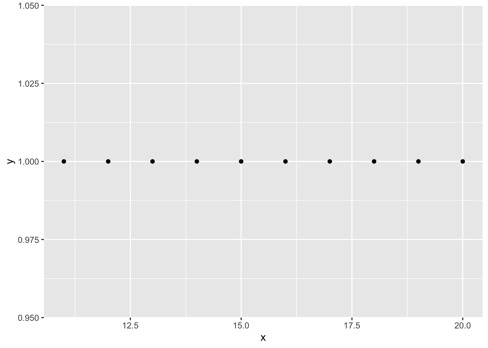
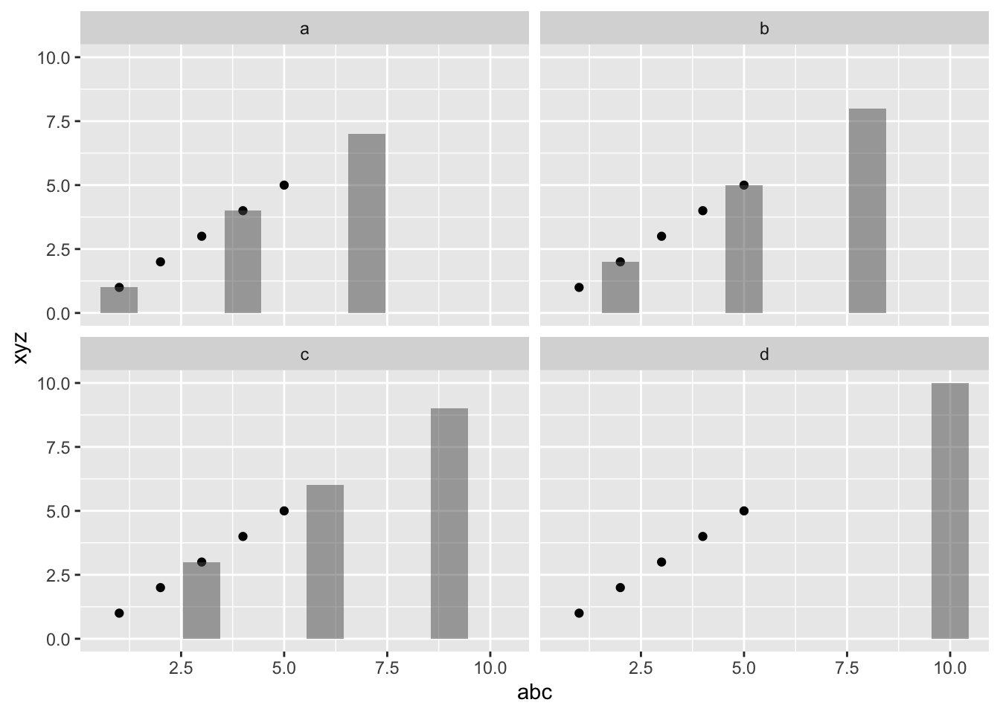
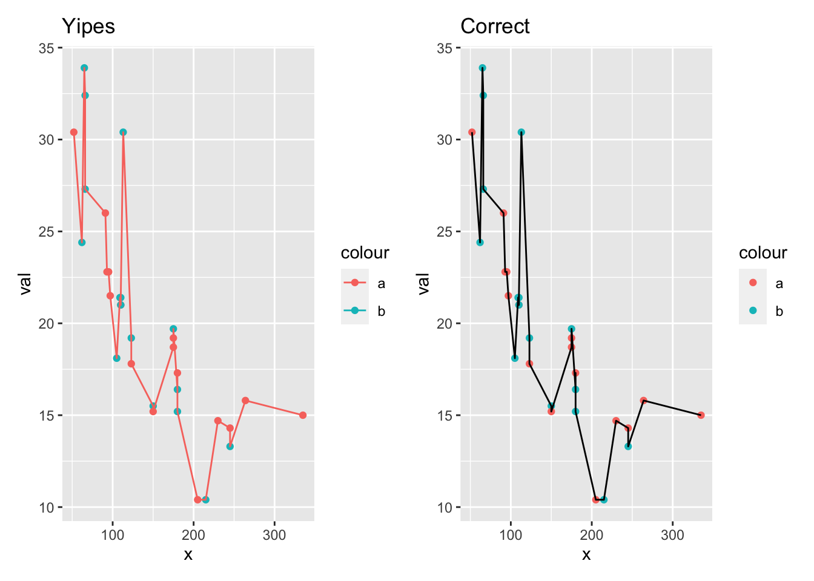

Week 5
Intro to ggplot2
Note in the Q&A (and more briefly in the lecture), I talked about data from the data frame specified in ggplot(data=df) flowing into geom_...(data=df2). That doesn’t actually happen. See the notes below.
More ggplot2
The lecture is to introduce you to the way that ggplot2 is structured because it is quite different to base plotting in R and it takes some getting used to. Once you are ready to go more indepth, here is some material that I have found useful.
- Review of the material I touched on about the ‘grammar’ of ggplot2.
- Another presentation of my material
- Once you have got the basics down, you can stop there. That’ll get you 99% of what you need. Or Google “intro to ggplot2” or “ggplot2 gallery” and you’ll find many books and examples.
tidyverse
I am not going to cover data-wrangling with tidyverse, but that is also a key skill for data science. I am not covering it because I think that is something that is not well suited to a 1 hour lecture. Here are some links to get you started:
- My 2020 “Intro to tidyverse” lecture.
- I like this Data Wrangling book
- And this one Intro to dplyr and Intro to tidyverse
- Hadley’s R for Data Science book with the exercise solutions is good a deep dive.
- DataCamp course if you learn better from courses.
Q & A
ggplot does respect data=df
Note In the Q&A, I was talking about problems with inheriting data frame information when you have multiple data frames in your ggplot() code. Basically, I implied that your ggplot code doesn’t always respect something like geom_line(data=df1) and would use the data frame defined in the ggplot() part of your code. That is not true.
In my example it appeared to do so but it was actually using val that I had defined earlier in my environment.
So this code will properly throw an error because df2 does not have y. Note, I use data=df in the ggplot() call so you clearly see what is data in the function calls.
library(ggplot2)
df <- data.frame(x=1:10, y=1:10, x2=1:10+2, y2=1:10+2)
df2 <- data.frame(x=df$x+10, y2=df$y)
ggplot(data=df, aes(x=x, y=y)) + geom_point(data=df2)## Error in FUN(X[[i]], ...): object 'y' not foundIf I define y, then R will use that. But it doesn’t use the x that I also defined, because the data in ggplot() is searched first.
y <- 1
x <- 1
ggplot(data=df, aes(x=x, y=y)) + geom_point(data=df2)
Being more specific in my aes() call tells R not to go looking for x and y outside the data frame specified by the data argument and the code properly throws an error.
ggplot(data=df, aes(x=.data$x, y=.data$y)) + geom_point(data=df2)## Error: Column `y` not found in `.data`Note what is happening in this code: * The geom_line() has a new data defined in data=df2 * But it doesn’t have its needed aesthetics (x and y), so it inherits that from ggplot().
Sometimes specifying your aes() in your geom_...() part using .data is not enough because there are other aesthetics that are flowing through and you don’t want those. In that case, inherit.aes=FALSE can be helpful. Here I don’t want aes(color="a") to be inherited.
df <- data.frame(x=1:10, y=1:10, x2=1:10+2, y2=1:10+2)
df2 <- data.frame(x=df$x+10, y2=df$y)
ggplot(data=df, aes(x=.data$x, y=.data$y, color="a")) +
geom_point(data=df2, aes(x=.data$x, y=.data$y2), inherit.aes=FALSE)
Making your ggplot2 code more robust
Once you have multiple data frames in your code, it is very easy to introduce bugs that take hours to track down. It is really hard to keep track of what data frame is being inherited and how the aesthetics are being inherited.
Look at this code. What data is geom_point() using? What aesthetics are geom_line() and geom_col() using? This code works but writing code like this can drive you crazy later on.
df1=data.frame(abc=1:10, xyz=1:10+rep(1:2,5), xyz2=1:10)
df2=data.frame(abc=1:10, xyz=0.5*df1$xyz, xyz2=0.25*df1$xyz, name=letters[rep(1:2,5)])
ggplot(df1, aes(x=abc, y=xyz)) +
geom_line(data=df2, aes(color=name)) +
geom_point(aes(y=xyz))
geom_line()isgeom_line(data=df2, aes(x=abc, y=xyz, color=name). Theaes(x=abc, y=xyz)is inherited fromggplot()andaes(color=name)is specified in the call.geom_point()isgeom_point(data=df1, aes(x=abc, y=xyz2).data=df1andaes(x=abc)are inherited fromggplot()andaes(y=xyz2)is specified in the call.aes(color=name)is not inherited from thegeom_line()above.
What happens if I had written very similar code but like this.
df1=data.frame(abc=1:10, xyz=1:10+rep(1:2,5), xyz2=1:10)
df2=data.frame(abc=1:10, xyz=0.5*df1$xyz, xyz2=0.25*df1$xyz, name=letters[rep(1:2,5)])
ggplot(df2, aes(x=abc, y=xyz, color=name)) +
geom_line() +
geom_point(data=df1, aes(y=xyz2))## Error in FUN(X[[i]], ...): object 'name' not foundWhy does this throw an error now??
geom_line()isgeom_line(data=df2, aes(x=abc, y=xyz, color=name). It inherited the data andaes()fromggplot().geom_point()isgeom_point(data=df1, aes(x=abc, y=xyz2, color=name).data=df1andaes(x=abc, color=name)are inherited fromggplot()andaes(y=xyz2)is specified in the call. Butnameis not indf1so it throws an error.
What’s a more robust way to write code when you have multiple data frames in the code? Here is one way, the data are clear and there is no danger of aesthetics being inherited.
ggplot() +
geom_line(data=df2, aes(x=.data$abc, y=.data$xyz, color=name)) +
geom_point(data=df1, aes(x=.data$abc, y=xyz2))
On stackoverflow, the answers would say that you should avoid multiple data frames and put all the data in one data frame that you specify in ggplot(). In my experience, that is simply impractical. There are many cases where using multiple data frames is the best solution. BTW, I do try to avoid using multiple data frames in my ggplot code! That is a good policy, just not always efficient.
facet when you have multiple data frames
Note that without a data frame in ggplot(), facet_...() functions won’t work. You can add a data frame with the column name that you want to facet on, but the behavior might be non-intuitive. In this case, we have a data frame df3 in ggplot() but it is not used elsewhere. The facet looks for any data frame that have the name column (df2 does) and plots those in separate panels. df1 doesn’t have name so it appears in every panel. This could be useful if there was a plot you needed to show in every panel and then other data that was separated across panels.
library(patchwork)
library(ggplot2)
df1=data.frame(abc=1:5, xyz=1:5, name2="a")
df2=data.frame(abc=1:10, xyz=1:10, name=c(rep(letters[1:3],3),"d"))
df3=data.frame(name="a")
p1 <- ggplot(df3) +
geom_point(data=df1, aes(x=.data$abc, y=.data$xyz)) +
geom_col(data=df2, aes(x=.data$abc, y=.data$xyz), alpha=0.5)
p1 + facet_wrap(~.data$name)
Note to those who do R packages, you need to always use .data in ggplot2 code even if you don’t have multiple data frames. Otherwise your package won’t pass R CMD check. So you have to write your calls like this:
ggplot(df, aes(x=.data$abc, y=.data$xyz)) + geom_point()another example of inherit.aes=FALSE
Another option for making your code more robust, is to use inherit.aes = FALSE so that you don’t inadvertently inherit aesthetic information. That can help with bizarre behavior like this. I’m trying to get the plot on the right, but the one on the left is all wrong.
library(patchwork)
library(ggplot2)
val <- mtcars$mpg
x <- mtcars$hp
df1 <- data.frame(x=x, val=val, name=rep(letters[1:2],length(x)/2))
df2 <- data.frame(x=x, val2=val+10)
df3 <- data.frame(x=x+3, val=val-10, name="a")
p1 <- ggplot(df3, aes(x=x, y=val, color="a")) +
geom_point(data=df1, aes(x=x, y=val, color=name)) +
geom_line(data=df2, aes(x=x, y=val)) +
ggtitle("Yipes")
p2 <- ggplot(df3, aes(x=x, y=val, color="a")) +
geom_point(data=df1, aes(x=x, y=val, color=name)) +
geom_line(data=df2, aes(x=x, y=val), inherit.aes=FALSE) +
ggtitle("Correct")
p1 + p2
More info on setting up credentials in R Studio
For those of you who want to connect R Studio to GitHub (so you can push to GitHub), here are some notes from the chat today. You don’t need to do this if you use GitHub Desktop; this is if you want to push to GitHub from within RStudio.
- the solution for me was generating a new ssh key to connect to github (https://help.github.com/en/github/authenticating-to-github/connecting-to-github-with-ssh)
- and making sure my local repository was pointed to the origin through ssh rather than https (https://help.github.com/en/github/using-git/changing-a-remotes-url#switching-remote-urls-from-https-to-ssh).
BTW, whenever I want to double check my repo origin, I open the file config in the .git folder. You’ll see your repo info listed there. Um, you change it here also and this is the first place I look if my repo is having trouble connecting to GitHub.